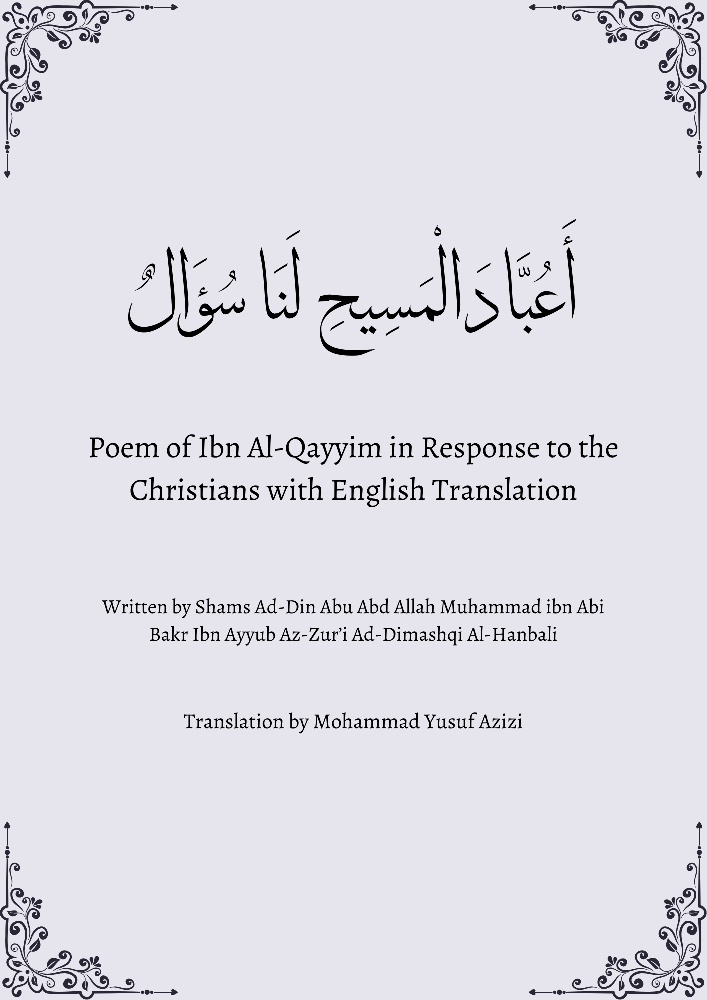
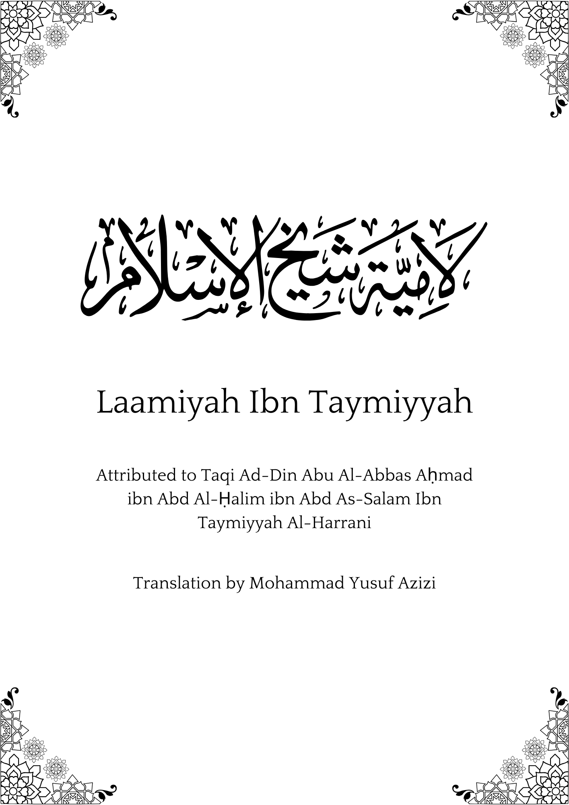
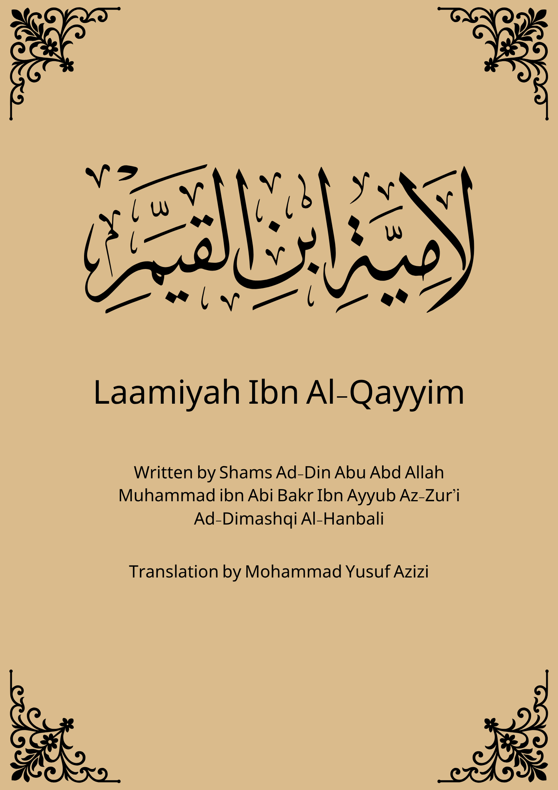
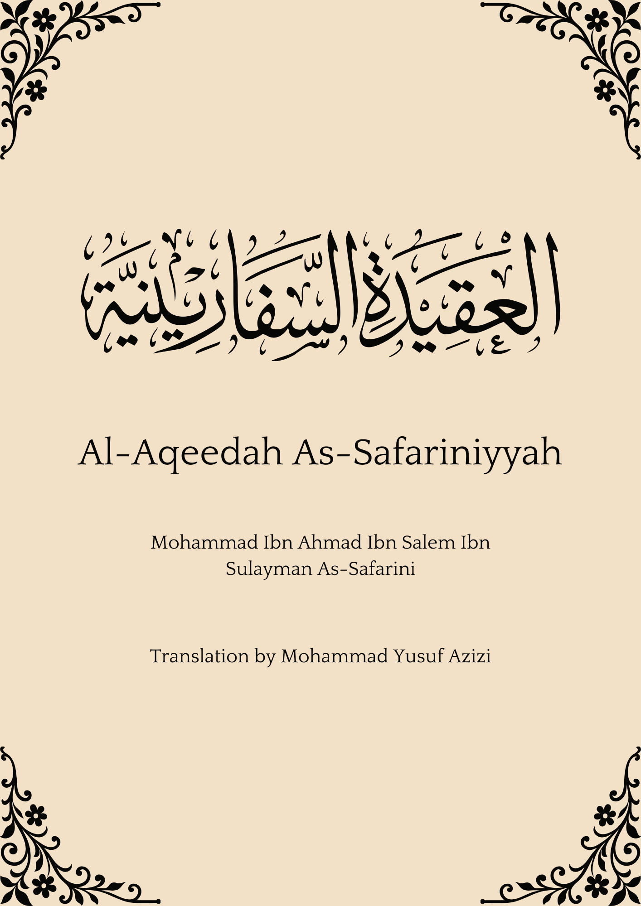

Islamic Qalam Library
Islamic E-books
Browse our collection of translated Islamic poems and works. Select an e-book to view its details, preview pages, read it online or download the PDF.

Nooniyah Al-Qahtani
A renowned Islamic poem detailing the principles of Ahlus-Sunnah wal-Jama'ah.

Oh Worshippers of Christ
Ibn al-Qayyim's eloquent response to Christian beliefs and defence of Islamic monotheism.

Laamiyah Ibn Al-Wardi
A profound poem offering wisdom on character, morality and living a virtuous life.

Laamiyah Ibn Taymiyyah
A concise poem affirming the beliefs and methodology of Ahl al-Sunnah wal-Jama'ah.

Ha'iyyah Ibn Abi Dawud
An eloquent poem outlining the foundational beliefs of Ahl al-Sunnah wal-Jama'ah.

Ta'iyyah Al-Ilbiri
A moving reminder of the Hereafter, repentance, righteous deeds and the reality of worldly life.

Laamiyah Ibn Al-Qayyim
Ibn al-Qayyim's warning against spiritual excesses and practices unsupported by the Qur'an and Sunnah.

Al-Aqeedah As-Safariniyyah
A systematic poem explaining the doctrine of Ahl al-Sunnah wal-Jama'ah.